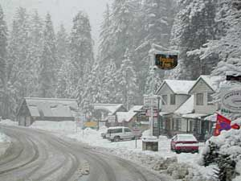

- Bicycling
- Camping & Cabins
- Fishing
- Hiking
- Hunting
- Horse Riding
- Picnicking
Preston 4
Shaver Lake White Christmas

Recreation
News
Snow complicates travel as Families head to the mountains
The California Highway Patrol is reminding people to drive cautiously and remember to bring chains while driving on icy roads.
Join
Join the chamber and learnn how you can make an impact on your community!
National Appeals
This site contains information about the Forest Service's Environmental Appeals. An appeal is a request to an agency higher authority for review of an environmental decision.
Responses
Recent and historical objection responses are available on this site and are organized by the Administrative Unit issuing the response.
Sierra National Plan
The Sequoia and Sierra National Forests are revising their forest land management plans using the 2012 Planning Rule, which provides a framework for U.S.